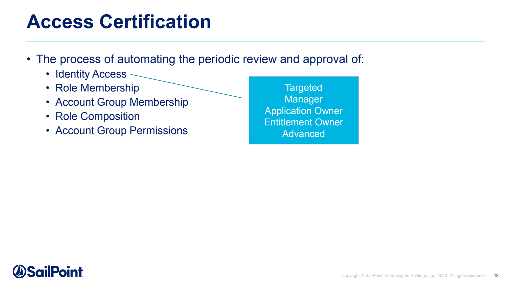
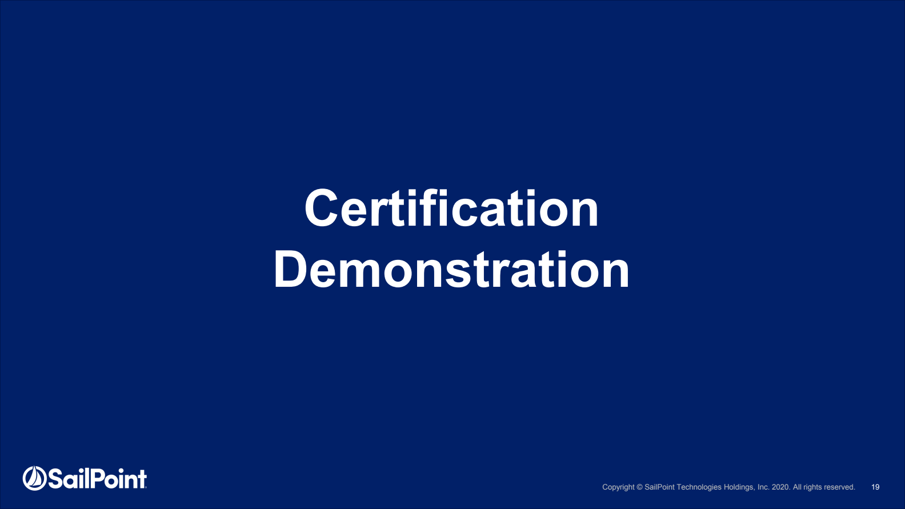
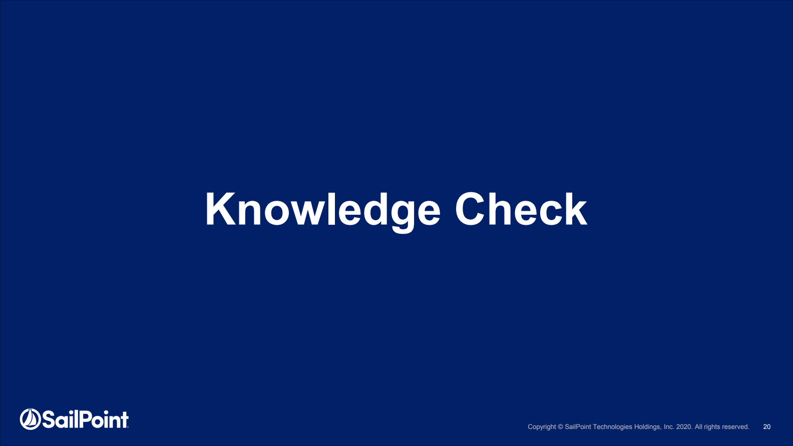
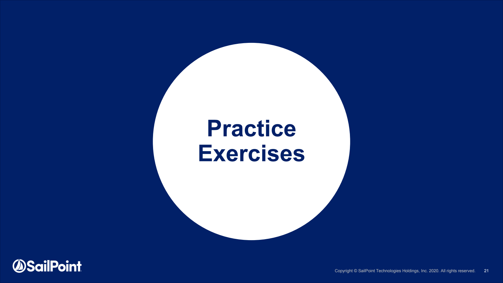
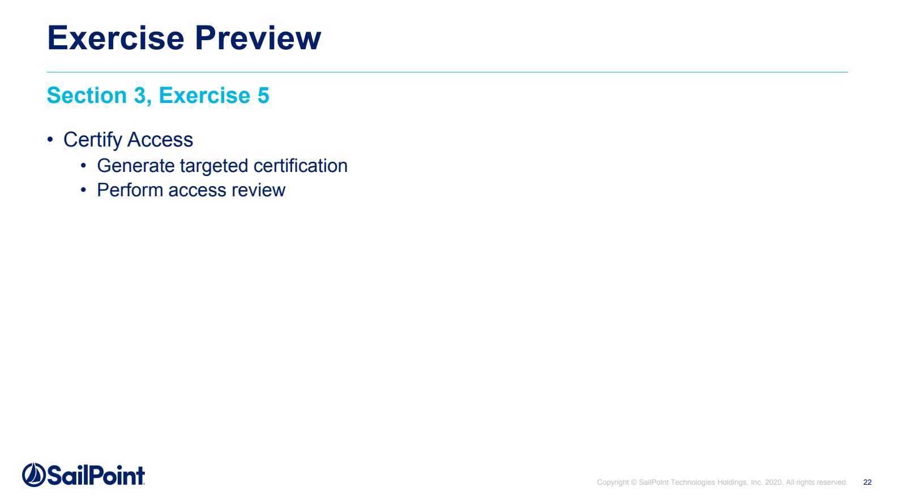

All course topics · Practice companion
19. Introduction to Certification
Campaign, access review and review detail
Access certification is a controlled review of identity access, role membership/composition or account-group membership/permissions. It supports business oversight and the organization's compliance obligations. The course distinguishes the technical team's responsibility for understanding the mechanism and extension rules from the compliance team's ongoing campaign operation.
A certification campaign defines the scope, timing and reviewers. It comprises one or more access reviews, each containing access data collected at generation and routed to its reviewer. Review details are the individual items on which decisions are made. A campaign is therefore not simply a live search that changes whenever a target account changes.




Lifecycle and extension points
The timeline shows generation, optional staging, active review, any configured challenge period and revocation handling. Certifiers make decisions; revokers fulfill the removals. Configuration can provide exclusion, pre-delegation, sign-off, period-entry/closing and escalation rules. Certifications can start manually, on a recurring schedule or through a relevant data-change event.
The slides also show AI recommendation and demonstration screens. Their retained illustrations preserve what the handout contains; video-only decision commentary and changing screens have not been reconstructed for this edition.




Exercise 3.5 study sequence
Generate the targeted Finance certification in a staged state, inspect its scope and assignments, then activate it. Reviewers inspect account/entitlement details, save their decisions and complete sign-off. A shared workgroup review illustrates how another authorized member can continue the work and how self-review constraints affect decisions. Finally, observe maintenance-driven changes in review status.
These are learning instructions, not a completed access review or certification exam attempt. The original exercise pages retain their training scenarios and prompts; the study prose does not substitute an answer key.


Related practice and source pages
Section Three — overview and contents · Exercise 3.5 — Certify Access